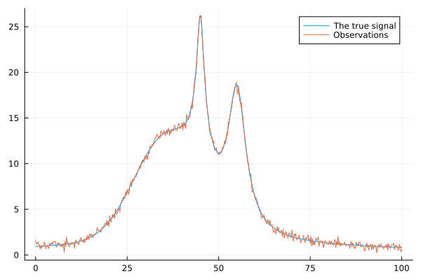

Peak fitting
Introduction
Spectra allows to fit a spectrum with a sum of peaks, of different shapes. For that, we rely on the peak shape functions gaussian, lorentzian, pseudovoigt and pearson7. Using those, you can generate a signal given x, and peak parameters. To generate a signal composed of multiple contributions from different peaks, use the create_peaks function. It is a useful function for instance to create "fake" signals and test our peak fitting function, fit_peaks.
fit_peaks uses either Optim.jl or a custom quasi-Newton algorithm to fit the sum of the peaks $y_{calc}$ to an observed signal $y$ affected by errors $\sigma_y$. The regression also takes into account à priori errors $\sigma_{m_{prior}}$ on prior model parameters $m_{prior}$: we assume a Gaussian prior on model parameters with a mean $m_{prior}$ and a covariance matrix $C_M$ which diagonal contains $\sigma_{m_{prior}}^2$.
Given the forward calculation of $y_{calc}$ as
\[y_{calc} = g(m)\]
with $m$ the model parameters and g the forward model, the misfit function $S$ is (Tarantola 2005, chapter 3, eq. 3.46):
\[S(m) = \frac{1}{2}[(y - y_{calc})^{t} C_D^{-1}(y - y_{calc}) + (m - m_{prior})^{t}C_M^{-1}(m-m_{prior})]\]
where $C_D^{-1}$ is the inverse of the data covariance matrix, which diagonal contains $\sigma_y^2$. The misfit function is related to the posterior probability density in the model space following $K \exp (-S(m))$, with $K$ a constant. Here, we are dealing with a non-linear problem so this posterior probability density is not Gaussian. However, we assume that it can be linearized near $m_{prior}$. Therefore, starting close to or at $m_{prior}$, we can use the following quasi-Newton algorithm to find a suitable solution (Tarantola 2005, eq. 3.51):
\[m_{n+1} = m_{n} - \mu_n(G_n^tC_D^{-1}G_n + C_M^{-1})^{-1}(G_n^tC_D^{-1}(y_{calc, n} - y) + C_M^{-1}(m_n - m_{prior}))\]
where $y_{calc, n}$ is the model output at iteration $n$ with the set of parameters $m_n$, $(G_n)^i_\alpha = (\frac{g^i}{m^\alpha})_{m_n}$ is the matrix of partial derivatives, and $\mu_n$ a step size typically lower or equal to 1. In fit_peaks, the two parameters maxiter and relax control the maximum number of iterations n and the step size $\mu_n$, with $\mu_n = \frac{1}{\text{relax}}$.
The other available method is the Interior Point Newton algorithm from Optim.jl (:Optim backend). This method implements an interior-point primal-dual Newton algorithm for solving the nonlinear, constrained optimization problem. In other terms, it allows the use of constraints, such as parameter boundaries. This is the main difference with the quasi-Newton method. The misfit function that is minimized is the $S(m)$ function provided above.
Convergence between the two methods usually is similar, with the quasi-Newton method being slightly faster. However, as there is no boundaries on parameters, one may have problems for instance if the intensity of one peak is close to 0. The quasi-Newton method offers no boundaries for the parameter values, contrary to the Interior Point Newton method.
Fitting procedure
A short example probably is better than many worlds. We are going to fit a synthetic signal that we created ourselves with the following code:
using Plots
using Spectra
using Statistics
# The X axis
x = collect(0:0.2:100)
# The "perfect" Y signal
y_perfect = (
gaussian(x, [10.0, 35.0, 10.0]) +
lorentzian(x, [15.0, 55.0, 3.0]) +
pearson7(x, [20.0, 45.0, 2.0, 0.4])
)
# Of course, in real world we have noise, here it is Gaussian
noise = randn(length(x))*0.3
# This is what we observe and want to fit
y_obs = y_perfect + noise
# Let's visualize it!
p1 = plot(x, [y_perfect, y_obs]; labels=["The true signal" "Observations"])
First, you define a vector containing named vectors of peak types, $m_{prior}$, $\sigma_{m_{prior}}$, and lower and upper boundaries. For instance, after a visual review of the signal above, you would declare a vector of peak informations like this:
# (peak_type, m_prior, sigma_m_prior, lower_bounds, upper_bounds)
peaks_info = [
(
:gaussian, # peak_type
[10.5, 30.0, 11.0], # m_prior (intensity, position, hwhm)
[5.0, 5.0, 3.0], # sigma_m_prior
[0.0, 0.0, 0.0], # lower_bounds
[Inf, Inf, 50.0]), # upper_bounds
(
:lorentzian, # peak_type
[17.5, 54.0, 3.1], # m_prior (intensity, position, hwhm)
[5.0, 3.0, 1.0], # sigma_m_prior
[0.0, 0.0, 0.0], # lower_bounds
[Inf, Inf, Inf], # upper_bounds
),
(
:pearson7, # peak_type
[21.5, 44.0, 3.0, 0.4], # m_prior (intensity, position, hwhm, shape exponent)
[3.0, 2.0, 5.0, 0.02], # sigma_m_prior
[0.0, 0.0, 0.0, 0.0], # lower_bounds
[100.0, 100.0, 50.0, Inf], # upper_bounds
),
]3-element Vector{Tuple{Symbol, Vararg{Vector{Float64}, 4}}}:
(:gaussian, [10.5, 30.0, 11.0], [5.0, 5.0, 3.0], [0.0, 0.0, 0.0], [Inf, Inf, 50.0])
(:lorentzian, [17.5, 54.0, 3.1], [5.0, 3.0, 1.0], [0.0, 0.0, 0.0], [Inf, Inf, Inf])
(:pearson7, [21.5, 44.0, 3.0, 0.4], [3.0, 2.0, 5.0, 0.02], [0.0, 0.0, 0.0, 0.0], [100.0, 100.0, 50.0, Inf])Upper and lower boundaries for model parameters are always required when constructing this peaks information vector. However, remember that they are not used in the quasi-Newton method.
We then pass the data and this vector of peak informations to prepare_context that stores everything in a Julia object. In addition to peaks_info, you will need the data vectors x, y_obs, and the errors on y_obs. Usually we do not have a precise idea of those errors. A good approximation can be provided by the difference between the observed signal and a smoothed version. We adopt this approach here and check if the estimated error makes sens:
y_smo = smooth(x, y_obs, method="gcvspline");
estimated_mean_error = sqrt(mean((y_obs .- y_smo).^2))
println("The estimated mean standard error on y_obs is $(round(estimated_mean_error,digits=2))")The estimated mean standard error on y_obs is 0.25OK, the result seems to be not too bad. We will place ourselves in a "real world" situation and use those errors. For convenience we create an vector of errors
estimated_error = estimated_mean_error * ones(size(x));501-element Vector{Float64}:
0.2541910639909907
0.2541910639909907
0.2541910639909907
0.2541910639909907
0.2541910639909907
0.2541910639909907
0.2541910639909907
0.2541910639909907
0.2541910639909907
0.2541910639909907
⋮
0.2541910639909907
0.2541910639909907
0.2541910639909907
0.2541910639909907
0.2541910639909907
0.2541910639909907
0.2541910639909907
0.2541910639909907
0.2541910639909907We can now pass the data and associated errors to prepare_context:
ctx = prepare_context(x, y_obs, peaks_info, estimated_error)FitContext([0.0, 0.2, 0.4, 0.6, 0.8, 1.0, 1.2, 1.4, 1.6, 1.8 … 98.2, 98.4, 98.6, 98.8, 99.0, 99.2, 99.4, 99.6, 99.8, 100.0], [1.6088686840357067, 1.1768098635632713, 1.2542895598680681, 1.4549624563172046, 1.1515194775042086, 1.1503532038054318, 0.6433975473731379, 0.9871559991716443, 0.7237932299106741, 0.9477195617366884 … 1.0258099218592251, 0.9362388380003671, 1.0926820748510897, 0.9267941861139594, 0.5242733358386387, 0.5613998542220258, 1.1952521714858138, 0.8508185592348501, 0.3432224544143415, 0.6039496097487248], Tuple[(:gaussian, [10.5, 30.0, 11.0], [5.0, 5.0, 3.0], [0.0, 0.0, 0.0], [Inf, Inf, 50.0]), (:lorentzian, [17.5, 54.0, 3.1], [5.0, 3.0, 1.0], [0.0, 0.0, 0.0], [Inf, Inf, Inf]), (:pearson7, [21.5, 44.0, 3.0, 0.4], [3.0, 2.0, 5.0, 0.02], [0.0, 0.0, 0.0, 0.0], [100.0, 100.0, 50.0, Inf])], [0.2541910639909907, 0.2541910639909907, 0.2541910639909907, 0.2541910639909907, 0.2541910639909907, 0.2541910639909907, 0.2541910639909907, 0.2541910639909907, 0.2541910639909907, 0.2541910639909907 … 0.2541910639909907, 0.2541910639909907, 0.2541910639909907, 0.2541910639909907, 0.2541910639909907, 0.2541910639909907, 0.2541910639909907, 0.2541910639909907, 0.2541910639909907, 0.2541910639909907], [25.0 0.0 … 0.0 0.0; 0.0 25.0 … 0.0 0.0; … ; 0.0 0.0 … 25.0 0.0; 0.0 0.0 … 0.0 0.0004], [0.04 0.0 … 0.0 0.0; 0.0 0.04 … 0.0 0.0; … ; 0.0 0.0 … 0.04 0.0; 0.0 0.0 … 0.0 2500.0], [0.06461309701287192 0.0 … 0.0 0.0; 0.0 0.06461309701287192 … 0.0 0.0; … ; 0.0 0.0 … 0.06461309701287192 0.0; 0.0 0.0 … 0.0 0.06461309701287192], [15.476738404920981 0.0 … 0.0 0.0; 0.0 15.476738404920981 … 0.0 0.0; … ; 0.0 0.0 … 15.476738404920981 0.0; 0.0 0.0 … 0.0 15.476738404920981], Dict{Any, Any}(2 => 4:6, 3 => 7:10, 1 => 1:3), Dict{Symbol, Function}(:pearson7 => Spectra.pearson7, :lorentzian => Spectra.lorentzian, :gaussian => Spectra.gaussian, :pseudovoigt => Spectra.pseudovoigt), [10.5, 30.0, 11.0, 17.5, 54.0, 3.1, 21.5, 44.0, 3.0, 0.4], [5.0, 5.0, 3.0, 5.0, 3.0, 1.0, 3.0, 2.0, 5.0, 0.02], [0.0, 0.0, 0.0, 0.0, 0.0, 0.0, 0.0, 0.0, 0.0, 0.0], [Inf, Inf, 50.0, Inf, Inf, Inf, 100.0, 100.0, 50.0, Inf], Spectra.var"#model#58"{Vector{Float64}, Vector{Tuple{Symbol, Vararg{Vector{Float64}, 4}}}, Dict{Symbol, Function}, Dict{Any, Any}}([0.0, 0.2, 0.4, 0.6, 0.8, 1.0, 1.2, 1.4, 1.6, 1.8 … 98.2, 98.4, 98.6, 98.8, 99.0, 99.2, 99.4, 99.6, 99.8, 100.0], [(:gaussian, [10.5, 30.0, 11.0], [5.0, 5.0, 3.0], [0.0, 0.0, 0.0], [Inf, Inf, 50.0]), (:lorentzian, [17.5, 54.0, 3.1], [5.0, 3.0, 1.0], [0.0, 0.0, 0.0], [Inf, Inf, Inf]), (:pearson7, [21.5, 44.0, 3.0, 0.4], [3.0, 2.0, 5.0, 0.02], [0.0, 0.0, 0.0, 0.0], [100.0, 100.0, 50.0, Inf])], Dict{Symbol, Function}(:pearson7 => Spectra.pearson7, :lorentzian => Spectra.lorentzian, :gaussian => Spectra.gaussian, :pseudovoigt => Spectra.pseudovoigt), Dict{Any, Any}(2 => 4:6, 3 => 7:10, 1 => 1:3)))estimated_error is an positional argument that will be set to an array of 1 if you do not pass a vector. It is advised to pass proper errors for a proper scaling of the misfit function.
From there, a good thing is to check that your prior model is not too remote from a good fit. The algorithms we use are local optimization methods and do not aim at finding a global minimum, but only local solutions. If you set $m_{prior}$ to values far from the solution, they will fail. To check your starting parameters, we can fit the prior model and the data using:
p = plot_fit(ctx, title="Prior model")No result provided, plotting the prior...Modify your starting parameters until the model starts to make sense, and then perform a fit calling fit_peaks with your favorite backend. For instance, if you want to use IPNewton, call:
result = fit_peaks(ctx, backend=:Optim)or if you want to use the quasi-Newton method described above, call:
result = fit_peaks(ctx, backend=:qGN, maxiter=100, relax=5)result is an object containing:
context::FitContext: Fit contextpeak_results::Vector: Peak resultsparams::Vector{Float64}: Peak parameters with uncertaintiescovariance::Matrix{Float64}: Covariance matrixerrors::Vector{Float64}: 1-sigma standard errors on parametersy_calc::Vector{Float64}: Model predictionsresiduals::Vector{Float64}: Residuals
In result.peal_results, numbers are now Measurements as we use the Measurements.jl library to automatically propagate fitting errors for peak area calculations.
After a fit, you can print the parameters and peak areas using print_params and plot the fit using plot_fit. Let's do the fit and those steps below
print_params(result.peak_results)
plot_fit(ctx, result.peak_results)Peak 1 (gaussian):
amplitude: 10.024 ± 0.053
center: 35.026 ± 0.084
width: 9.977 ± 0.087
area: 212.9 ± 2.4
Peak 2 (lorentzian):
amplitude: 14.891 ± 0.078
center: 55.005 ± 0.017
width: 3.0 ± 0.027
area: 140.3 ± 1.2
Peak 3 (pearson7):
amplitude: 20.1 ± 0.15
center: 45.007 ± 0.01
width: 1.973 ± 0.037
exponent: 0.3955 ± 0.0035
area: -147.1 ± 9.2Errors on peak parameters
Errors provided by fit_peaks
The errors provided by fit_peaks come from the evaluation of the Hessian matrix at the optimal point. In the quasi-Newton algorithm, we directly calculate the posterior model covariance matrix as (Tarantola, 2005, eq. 3.53):
\[C_{M, post} = C_{M} - C_{M}G^{t}(G C_M G{t} +C_D)^{-1}G C_M\]
and retrieve the standard errors on model parameters from the squared root of the diagonal of $C_{M, post}$. In the IPNewton case, we use ForwardDiff.hessian() to calculate the Hessian matrix at the optimal point to optain $C_{M, post}$.
Do not neglect off-diagonal terms in $C_{M, post}$. Peak parameters often are strongly correlated, and neglecting off-diagonal terms may lead to report wrong errors on quantities that depends on several peak parameters, such as peak areas. This is why we automatically propagate errors using $C_{M, post}$ and Measurements.jl when calculating peak areas in fit_peaks for instance.
Checking errors with bootstrapping
$C_{M, post}$ may not necessarily contain valid parameter uncertainties, particularly if the problem is strongly non-linear.
To check for parameter errors, one option is to use bootstrapping. bootstrap allows us to bootstrap a spectrum and refit the model on the spectrum subsamples. You will obtain samples of models all adjusted on slightly different data. Using the model samples, we can check that the errors calculated from the Hessian are valid, or if they are not, we can use the new errors calculated from the bootstrap samples.
The interface is easy, similar to that of fit_peaks but the fit context is defined internally so you don't even have to worry about that. For instance, using the quasi-Newton method, we can do:
boot_params, boot_results = bootstrap(x, y_obs, estimated_error, peaks_info, nb_boot = 50, backend=:Optim);The quasi-Newton algorithm is the quickest so you may prefer this one for bootstrapping. If so, you can try also setting maxiter to a value as small as possible without affecting fit convergence. Another tip is to provide a new peaks_info vector with $m_{prior}$ set to the values of a good fit that you previously did.
Here we only used 50 bootstraps for the sake of generating the documentation in a reasonable time. In practice, you should use more bootstraps (e.g. 1000) to get a good estimate of the errors.
The bootstrap function returns:
- a matrix of size (
nb_params,nb_boot) with the fitted parameters (hereboot_params); - a peakresults objects with values tied to their errors thanks to Measurements.jl (here called `bootresults`).
We can now print the bootstrapped results and compare the errors with those previously calculated from the Hessian:
print_params(boot_results)Peak 1 (gaussian):
amplitude: 10.039 ± 0.059
center: 35.045 ± 0.098
width: 9.99 ± 0.11
area: 213.4 ± 3.0
Peak 2 (lorentzian):
amplitude: 14.91 ± 0.11
center: 55.009 ± 0.019
width: 2.994 ± 0.041
area: 140.2 ± 1.5
Peak 3 (pearson7):
amplitude: 20.09 ± 0.15
center: 45.007 ± 0.012
width: 1.968 ± 0.044
exponent: 0.3948 ± 0.0037
area: -145.3 ± 10.0OK, actually for this example, we see that the errors from the boostrap analysis are close to those calculated from the Hessian matrix. Everything thus seems OK.
Of course, a final quick visual inspection is always nice. This can be done by passing the median of the matrix of bootstrapped parameters to the plot_fit function:
plot_fit(ctx, boot_results)Bayesian MCMC fit with Turing.jl
The same problem can be tackled using Turing.jl and the peak shape functions from Spectra as follow. This offers another way to check that the estimated errors are good for instance, or to use different types of prior probability distributions on model parameters (as in the quasi-Newton we assume Gaussian priors).
You will need to install Turing.jl, which is not a dependency of Spectra. The code below runs well but it may not be fully optimized. It is just for the sack of example.
Run it on your own computer! If you have suggestions, do not hesitate!
using Turing
# Define a Bayesian model with priors
@model function bayesian_peaks(x, y)
# Define priors based on peak_types
# PEAK 1
amplitude ~ truncated(Normal(10.016, 0.5), 0.0, Inf)
center ~ Normal(34.92, 0.5)
width ~ truncated(Normal(10.0, 0.5), 0.0, Inf)
μ = gaussian(x, [amplitude, center, width])
# PEAK 2
amplitude2 ~ truncated(Normal(14.9, 0.5), 0.0, Inf)
center2 ~ Normal(55.0, 0.5)
width2 ~ truncated(Normal(3.0, 0.5), 0.0, Inf)
μ2 = lorentzian(x, [amplitude2, center2, width2])
# PEAK 3
amplitude3 ~ truncated(Normal(25.5, 0.5), 0.0, Inf)
center3 ~ Normal(43.0, 10.0)
width3 ~ truncated(Normal(2.0, 0.5), 0.0, Inf)
lr ~ truncated(Normal(0.39, 0.03), 0.0, 1.0)
# Calculate model prediction
μ3 = pseudovoigt(x, [amplitude3, center3, width3, lr])
# Likelihood
σ ~ truncated(Normal(0.2, 0.03), 0.001, Inf)
y ~ MvNormal(μ + μ2 + μ3, σ^2 * I)
end
chain = sample(bayesian_peaks(x_fit, y_fit), NUTS(), 2000, nchains=3, progress=true)Final remarks
Done, please do check the examples in the Tutorials section for further peak fitting examples. Below you will find the full API of the various functions, including peak shapes, area calculations, fitting algorithms...
Functions API
Peak fitting
Spectra.prepare_context — Functionprepare_context(x, y, peaks_info, sigma=ones(length(x)))Create a precomputed context for peak fitting operations.
Arguments
x::Vector{Float64}: Independent variable valuesy::Vector{Float64}: Observationspeaks_info::Vector{Tuple}: Peak specifications containing:Symbol: Peak type (:gaussian,:lorentzian,:pseudovoigt,:pearson7)Vector{Float64}: Initial parametersVector{Float64}: Parameter uncertaintiesVector{Float64}: Lower boundsVector{Float64}: Upper bounds
sigma::Vector{Float64}: Data uncertainties (default: ones)
Returns
FitContext: Precomputed structure containing matrices, indices, and model function
Examples
'''julia peaksinfo = [ (:gaussian, [1.0, 0.0, 0.5], [0.1, 0.05, 0.1], [-Inf, -1.0, 0.1], [Inf, 1.0, 2.0]), (:lorentzian, [0.5, 0.2, 0.3], [0.1, 0.05, 0.1], [0.0, -0.5, 0.1], [2.0, 0.5, 1.0]) ] ctx = preparecontext(x, peaks_info, sigma) '''
Spectra.fit_peaks — Functionfit_peaks(ctx::FitContext; backend=:qGN, relax=4, maxiter=100)Perform peak fitting using specified optimization backend.
Arguments
ctx::FitContext: Precomputed context fromprepare_contextbackend::Symbol: Optimization method (:Optimor:qGN)relax::Real: Step relaxation factor (qGN only)maxiter::Int: Maximum iterations (qGN only)
Returns
FitResult: Structured results containing:context::FitContext: Fit contextpeak_results::Vector: Peak results with uncertaintiesparams::Vector{Float64}: Peak parameterscovariance::Matrix{Float64}: Covariance matrixerrors::Vector{Float64}: 1-sigma standard errors on parametersy_calc::Vector{Float64}: Model predictionsresiduals::Vector{Float64}: Residuals
Examples
x = 1:1.0:100
y = gaussian(x, 1., 50.0, 5.0) .+ 0.1 * randn(length(x))
peaks_info = [
(:gaussian, [1.0, 50.0, 5.0], [0.1, 0.05, 0.1], [0.0, 40.0, 0.1], [2.0, 60.0, 10.0])
]
ctx = prepare_context(x, y, peaks_info)
result = fit_peaks(ctx; backend=:qGN, relax=4, maxiter=100)
plot_fit(ctx; result=result.peak_results)Spectra.fit_Optim — Functionfit_Optim(ctx::FitContext)Perform a box constrained fit using the Optim package with the LBFGS algorithm.
The loss function combines a loss on data and on model prior (eq. 3.46 in Tarantola 2005)
Arguments
-ctx: context created by prepare_context
Returns
fitted_params: fitted parametersCMpost: covariance matrix of the fitted parameterssqrt.(diag(CMpost)): errors of the fitted parameters
Spectra.fit_qNewton — Functionfit_qNewton(ctx::FitContext; maxiter=100, relax=5)Perform a quasi-Newton fit (Tarantola 2005, eq. 3.51)
Arguments
-ctx: context created by prepare_context -maxiter: maximum number of iterations -relax: relaxation factor for the step size
Returns
mcurrent: fitted parametersCMpost: covariance matrix of the fitted parameterssqrt.(diag(CMpost)): errors of the fitted parameters
Spectra.plot_fit — Functionplot_fit(ctx, peak_results=nothing; xlabel="X", ylabel="Y", title="Model adjustement")return a plot of the data and the fit given a ctx context created by prepare_context, and a result generated by fit_peaks or get_fit_results. If result is not provided, the prior is plotted.
Spectra.print_params — Functionprint_params(peak_results)print the parameters after the fit, peakresults is a vector of Named Tuples (generated by getpeak_results) with the results of the fit.
Spectra.get_peak_results — Functionget_peak_results(ctx, params, CMpost)Returns a vector of Named Tuples with the results of the fit. Values are tied to their errors via the covariance matrix CMpost.
Spectra.bootstrap — Functionbootstrap(x, y, sigma, peaks_info; nb_boot = 100, backend=:qGN, relax=5., maxiter=100)Perform a bootstrap on the fit.
Arguments
-x: x-axis data -y: y-axis data -sigma: data noise -peaks_info: vector of tuples with the peak type and parameters (peaktype, initialparams, uncertainties, lowerbounds, upperbounds) -nb_boot: number of bootstrap samples -backend: optimization backend, either :Optim or :qGN -relax: relaxation factor for the step size (only used in :qGN) -maxiter: maximum number of iterations (only used in :qGN)
Returns
- a matrix of size (number of parameters, number of bootstrap samples) with the fitted parameters
- a vector of Named Tuples with the results of the fit. Values are tied to their errors via the covariance matrix CMpost. (peaktype, initialparams, uncertainties, lowerbounds, upperbounds)
Spectra.FitContext — TypeFitContext type containing all fitting context -x::Vector{Float64}: x data vector. -y::Vector{Float64}: y data vector. -peaks_info::Vector{Tuple}: contains the informations of the peaks of the model. -sigma::Vector{Float64}: error on y. -CD::Matrix{Float64}: data covariance matrix. -ICD::Matrix{Float64}: inverse of the data covariance matrix. -mprior::Vector{Float64}: prior model parameters. -mprior_sigma::Vector{Float64}: uncertainties on prior model parameters. -CM::Matrix{Float64}: model covariance matrix (prior). -ICM::Matrix{Float64}: inverse of the model covariance matrix (prior). -all_lower_bounds::Vector{Float64}: lower boundaries for parameters. -all_upper_bounds::Vector{Float64}: upper boundaries for parameters. -model::Function
Spectra.FitResult — TypeFitResult type containing all fitting results and metadata context::FitContext: Fit Context. peak_results::Vector: Vector of Named Tuples containing parameters and areas for each peak, with errors. params::Vector{Float64}: Vector of parameters. covariance::Matrix{Float64}: Covariance matrix at the optimal point $C_{M, post}$. errors::Vector{Float64}: Uncertainties on parameters calculated as $sqrt.(diag(covariance))$. y_calc::Vector{Float64}: Calculated y values, using params. residuals::Vector{Float64}: Difference between calculated and input y values.
Peak shapes
Spectra.create_peaks — Functioncreate_peaks(x::Vector{Float64}, peak_infos::Vector{Dict{Symbol,Any}})Generate multiple peaks and their sum from a collection of peak descriptions.
Arguments
x::Vector{Float64}: X-axis values where peaks will be evaluated.peak_infos::Vector{Dict}: List of dictionaries describing peaks. Each dictionary should contain::type: Peak type (:gaussian,:lorentzian,:pseudovoigt,:pearson7)- Required parameters for the specified peak type:
- Gaussian:
:amplitude,:center,:hwhm - Lorentzian:
:amplitude,:center,:hwhm - PseudoVoigt:
:amplitude,:center,:hwhm,:lorentzian_fraction - Pearson7:
:amplitude,:center,:hwhm,:exponent
- Gaussian:
Returns
peaks::Matrix{Float64}: Matrix where each column represents a individual peaktotal_spectrum::Vector{Float64}: Sum of all peaks
Examples
x = collect(0:0.1:10)
peak_infos = [
Dict(:type => :gaussian, :amplitude => 1.0, :center => 5.0, :hwhm => 0.5),
Dict(:type => :lorentzian, :amplitude => 0.8, :center => 7.0, :hwhm => 1.2),
Dict(:type => :pearson7, :amplitude => 0.8, :center => 3.0, :hwhm => 0.2, :exponent => 1.9)
]
peaks, total = create_peaks(x, peak_infos)Spectra.gaussian — Functiongaussian(x, amplitude, center, hwhm)
gaussian(x, p)Gaussian function with parameters amplitude, center, hwhm or a vector p = [amplitude, center, hwhm].
Notes:
- the half-width at half maximum (hwhm) of the gaussian peak is related to the standard deviation sigma by: hwhm = sqrt(2*log(2)) * sigma
- gaussian(x, p) is a shorthand for gaussian(x, p[1], p[2], p[3])
Spectra.lorentzian — Functionlorentzian(x, amplitude, center, hwhm)
lorentzian(x, p)Lorentzian function with parameters amplitude, center, hwhm or a vector p = [amplitude, center, hwhm].
Notes:
- hwhm: half-width at half maximum
- lorentzian(x, p) is a shorthand for lorentzian(x, p[1], p[2], p[3])
Spectra.pseudovoigt — Functionpseudovoigt(x, amplitude, center, hwhm, lorentzian_fraction)
pseudovoigt(x, p)Pseudovoigt function with parameters amplitude, center, hwhm, lorentzianfraction or a vector p = [amplitude, center, hwhm, lorentzianfraction].
Notes:
- hwhm: half-width at half maximum.
- pseudovoigt(x, p) is a shorthand for lorentzian(x, p[1], p[2], p[3], p[4]).
- calculated as lorentzianfraction*lorentzian + (1 - lorentzianfraction)*gaussian.
- lorentzian_fraction is a value between 0 and 1 that controls the mixing between Gaussian and Lorentzian.
Spectra.pearson7 — Functionpearson7(x, amplitude, center, hwhm, exponent)
pearson7(x, p)Pearson 7 function with parameters amplitude, center, hwhm, exponent or a vector p = [amplitude, center, hwhm, exponent].
Notes:
- Equation is amplitude / (1 + ((x - center)/hwhm)^2 * (2^(1/exponent) - 1))^exponent.
- pearson7(x, p) is a shorthand for pearson7(x, p[1], p[2], p[3], p[4]).
Utilities
Spectra.area_peaks — Functionarea_peaks(peak_type::Symbol, amplitude::Float64, hwhm::Float64; lorentzian_fraction=nothing, exponent=nothing)Calculate the area under Gaussian, Lorentzian, Pseudo-Voigt, or Pearson VII peaks based on their parameters. Areas are calculated using analytical formulas.
Arguments
peak_type::Symbol: The type of peak. Supported types are::gaussian: Gaussian peak.:lorentzian: Lorentzian peak.:pseudovoigt: Pseudo-Voigt peak (weighted combination of Gaussian and Lorentzian).:pearson7: Pearson VII peak.
amplitude::Float64: Amplitude of the peak (maximum height).hwhm::Float64: Half-width at half-maximum of the peak.lorentzian_fraction::Union{Float64, Nothing}: Lorentzian fraction (for Pseudo-Voigt peaks). Must be in [0, 1]. Default isnothing.exponent::Union{Float64, Nothing}: Shape parameter for Pearson VII peaks. Default isnothing.
Returns
area::Float64: The calculated area under the specified peak.
Examples
Gaussian Peak
A = 2.0
hwhm = 0.5
area_gaussian = peak_area("gaussian", amplitude=A, hwhm=hwhm)Lorentzian Peak
A = 2.0
hwhm = 0.5
area_lorentzian = peak_area("lorentzian", amplitude=A, hwhm=hwhm)Pseudo-Voigt Peak
A = 2.0
hwhm = 0.5
lorentzian_fraction = 0.5
area_pseudovoigt = peak_area("pseudovoigt", amplitude=A, hwhm=hwhm, lorentzian_fraction=lorentzian_fraction)Pearson VII Peak
A = 2.0
hwhm = 0.5
exponent = 2.0
area_pearson7 = peak_area("pearson7", amplitude=A, hwhm=hwhm, exponent=exponent)Notes
- Gaussian Formula: $\text{Area} = A \cdot \text{hwhm} \cdot \sqrt{\frac{\pi}{\ln 2}}$
- Lorentzian Formula: $\text{Area} = \pi \cdot A \cdot \text{hwhm}$
- Pseudo-Voigt Formula: $\text{Area} = \eta \cdot (\pi \cdot A \cdot \text{hwhm}) + (1-\eta) \cdot (A \cdot \text{hwhm} \cdot \sqrt{\frac{\pi}{\ln 2}})$
- Pearson VII Formula: $\text{Area} = A \cdot \text{hwhm} \cdot \sqrt{\frac{\pi}{2^{1/exponent} - 1}} \cdot \frac{\Gamma(exponent - 0.5)}{\Gamma(exponent)}$
Errors
- Throws an error if an unsupported
peak_typeis provided. - Throws an error if required parameters for a specific peak type are not provided.
- Throws an error if lorentzian_fraction is not comprised in the [0, 1] interval
Spectra.bootsample — Functionbootsample(x, y; boottype::String="np", ese=nothing)Inputs
x: the x axis. It can have multiple columns.y: the y axis. It can have multiple columns.
Options
boottype::String = "np": type of bootstrapping- "np": non-parametric bootstrapping. Data resampled with replacement.
- "p": parametric bootstrapping. Data resampled from the Normal(y, ese) distribution.
ese = nothing: standard errors ony.
Outputs
b_x_f: bootstrapped x sampleb_y_f: bootstrapped y sample
The bootstrap function can be embedded in a for loop, and will each time produce a different dataset. Performing K times the bootstrapping and fitting each time the model will allow to estimate the error distribution on the peak parameters. This technic has the advantage of making no prior assumption on the probability distribution functions of parameters errors. However, it is more time consuming that using the covariance matrix.
References
- Efron, B. 1979. “Bootstrap Methods: Another Look at the Jackknife.” The Annals of Statistics 7 (1): 1–26.
- Efron, Bradley. 1981. “Nonparametric Estimates of Standard Error: The Jackknife, the Bootstrap and Other Methods.” Biometrika 68 (3): 589–99. doi:10.1093/biomet/68.3.589.
- Efron, B., and Tibshirani, R. 1994. An Introduction to the Bootstrap. CRC press.